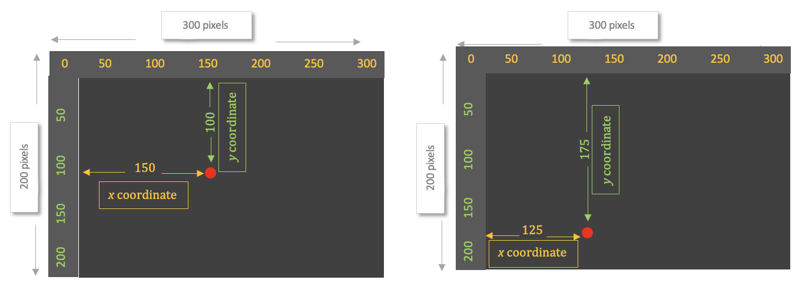
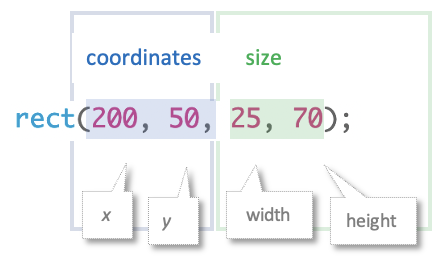
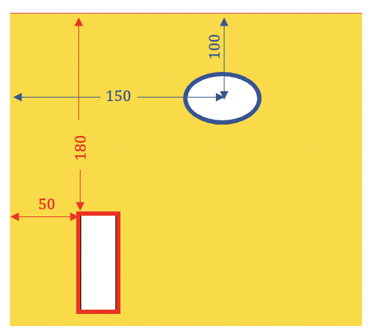

Lesson 1
Shapes with Random Positions, Colors, and Sizes
In this lesson, you'll make shapes that change position, color, and size randomly.

1. The Canvas
To learn p5.js, you'll tinker in little windows like the one below. Remember, you can't break anything!
Tinker
Click ▶Play to run the code below. Then explore the 3 numbers! Change them one at a time, clicking ▶Play after each change. What does each number do? What does each command do? Hint: Use numbers between 0 and 300, for now.
- createCanvas defines the width and height of the canvas, measured in pixels. The canvas is the drawing area at the right, where you see the background color after you click ▶Play. A pixel is the smallest dot that the screen can show; it's about 1/100 inch wide and tall.
- background changes the color of the canvas — 0 is black, 255 is white, and in between the grays get lighter as the number gets bigger.
2. Mistakes
Let's make some mistakes on purpose, just to see what happens.
Tinker
Try deleting the comma between the 2 numbers in createCanvas. Then click ▶Play. What happens?
Click Revert to reset. Delete a parenthesis ( ), and click ▶Play. What happens?
Click Revert to reset. Add a space between create and Canvas. Or write canvas with a lower-case "c". What happens?
- You must write commands and punctuation exactly as p5.js expects. Otherwise you'll see error messages. The error messages aren't very helpful. :-) Since most errors are caused by mistakes in spelling or punctuation, check them carefully whenever you see an error message.
3. Arguments
You may have noticed that the commands you've learned include numbers enclosed in parentheses. These numbers are called arguments. They change the way that the command works. For example, background(127) creates gray and background(0) creates black.
4. Understanding Color
In a moment, we'll add color to our drawing! But first, it's helpful to understand how p5.js creates color.
- Go to HSB Color Picker, which opens in a new tab. Notice that you see 3 numbers: hue, saturation, and brightness. These 3 qualities, taken together, create a color.
- Drag handle on the color wheel to change the hue. Hue is the basic color — red, gold, turquoise, and so on. Hue is represented as degrees around a color circle. For example, we write yellow as 50°.
- Drag the first slider to change the saturation. Saturation is the intensity of the color. Saturation is represented as a percentage, with 100% meaning full color and 0% meaning no color (white).
- Drag the last slider to change the brightness. Brightness is the shade, or amount of black, mixed into color. Brightness is represented as a percentage, with 100% very bright (no black) and 0% meaning the color has become completely black.
5. Add Color to a Drawing
Let's add color to our sketch!
Tinker
Click ▶Play.
You'll see a blue background. It's created by the
colorMode(HSB) and background(51, 100, 100) commands.
The 3 arguments in the background command represent the hue, saturation, and brightness (in that order).
Go back to HSB Color Picker.
Choose a color you like.
Then copy or type the 3 numbers for that color, in order, into the background command below.
Omit the degree and percent signs.
Example. I like this color green: hue 85°, saturation 100%, brightness 90%
so I'd write background(85, 100, 90)
- Remember that you must write commands and punctuation exactly as p5.js expects. In the background command, for example, the arguments must appear in the correct order — hue, saturation, brightness. They must be separated by commas and enclosed in parentheses.
- The argument in the colorMode command is HSB, written in all caps.
6. Coordinates
In a moment, you'll learn to draw shapes like lines, circles, and rectangles. But first, you need to understand how we use coordinates to put shapes at different locations on the canvas.
Read About It
The first picture below shows a small red circle located 150 pixels across and 100 pixels down the screen.
The other picture below shows the red circle located 125 pixels across and 175 pixels down the screen.

Every location on screen can be identified uniquely and precisely by its down-and-across distances.
For example, there is only one point on screen that is 150 pixels across and 100 pixels down the screen,
and there is only one point at 125 pixels across and 175 pixels down.
Because these locations are unique and precise, we can use them to place shapes where we want them on screen.
We give these distances a special name: coordinates.
A shape's distance across the screen is called its x-coordinate.
Its distance down the screen is called its y-coordinate.
We write the coordinates like this: 150, 100
The x-coordinate is always first, followed by the y-coordinate (they're in alphabetical order). The two coordinates are separated by a comma.
7. Draw an Ellipse
Finally, let's draw a shape! We'll make it an ellipse (oval).
Tinker
Click ▶Play.
You'll see a white ellipse (oval) created by the ellipse(150, 100, 50, 35) command.
Explore the 4 numbers in ellipse! Change them one at a time, clicking ▶Play after each change.
What does each number do?
Hint: Use numbers between 0 and 300, for now.
-

- The first argument in the ellipse command is the x-coordinate.
- The second argument is the y-coordinate.
- The third argument is the width of the ellipse.
- The fourth argument is its height.
- All measurements are in pixels.
- Remember to write the arguments to ellipse in order, separated by commas, and enclosed in parentheses.
8. Draw a Rectangle
Let's add a rectangle.
Tinker
Click ▶Play.
You'll see a white rectangle created by the rect(50, 180, 25, 70) command.
Explore the 4 numbers in rect! Change them one at a time, clicking ▶Play after each change.
What does each number do?
Hint: Use numbers between 0 and 300, for now.
- 
- The arguments in the rect command are the same as in the ellipse command.
- Write rect not rectangle.
9. Positioning Shapes from Their Centers
You may have noticed that coordinates in the ellipse and rect commands operate differently from each other.
Read About It
In the ellipse command, the coordinates position its center.
But coordinates in the rect command position its top left corner.

This gets very confusing!
But we can tell rect to behave just like ellipse by adding the rectMode(CENTER) command to our code.
- The argument in the rectMode command is CENTER, written in all capital letters.
- rectMode(CENTER) must appear in the script before you draw any rectangles.